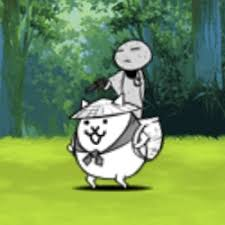

Kasa Jizo

Well, I don't think I have to explain much on this one. The absolute king of early game with massive damage to black enemies and spammability, allowing the player to easily grind XP. Moreover, he is a perfect counter to the stupid black kangaroos. Their damage is really high, and to put it into perspective, three 300% black kangaroos combined have more DPS than a cyclone.